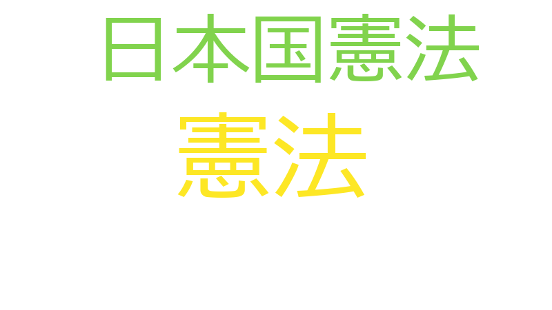

野田毅

憲法、日本国憲法、昭和、時代、沖縄、ソ連、佐、冷戦、国連、宣言、憲、憲章、成文、環境、英語、連合、ソ、ネーションズ、ユナイテッド、主権、内閣、前文、合憲、善玉、国際、安全保障、小選挙区、当選、悪玉、情勢、憲法改正、改憲、政治的、敵国、昔、最初、最高裁、朝鮮半島、条項、構造、法制定、田中、米、自主、解釈、説法、違憲、釈迦、GHQ、いいかげん、かね、ぎみ、びよからぬことをやるなら、オンパレード、カーテン、チャーチル、ドイツ、ポツダム、マッカーサー、一体、一段落、与野党、世界、中佐、中共、中国、中心、中華民国、久しぶり、予算、二分、任期、冒頭、冷静、制、北朝鮮、占領、原点、問題提起、問題点、回復、国交正常化、国会議員、国内、国家、国民、基本的、外国、大佐、大戦、天皇陛下、少佐、山、崩壊、工夫、建国、当たり前、恨み、悲願、憲法審査会
憲法
2021-04-15 account_balance
…冒頭、今、新藤先生がおっしゃった、全くそのとおりで、できれば、この憲法審査会は、政治的なことは横へ置いて、純粋に憲法論議を真面目にやろうじゃないかということで始まったと思っています。私は久しぶりに発言をさせていただくん…
…、今、新藤先生がおっしゃった、全くそのとおりで、できれば、この憲法審査会は、政治的なことは横へ置いて、純粋に憲法論議を真面目にやろうじゃないかということで始まったと思っています。私は久しぶりに発言をさせていただくんです…
…おっしゃったのが、実は小選挙区制なんです。我々一年生が呼びつけられて、何で小選挙区かという話を言われたのは、憲法改正なんだということでした。ちょうど私どもが当選したときには、沖縄返還、それから日中国交正常化、とりあえず…
…、とりあえず戦後は一段落した、しかしまだ残っているじゃないかというのが、靖国神社の国家護持の問題と、それから憲法改正だったんです。爾来、憲法問題は、折に触れて、いろいろありました。そういう中で、ほとんど私も、政治活動の…
…しかしまだ残っているじゃないかというのが、靖国神社の国家護持の問題と、それから憲法改正だったんです。爾来、憲法問題は、折に触れて、いろいろありました。そういう中で、ほとんど私も、政治活動の中で憲法問題とは、中心にいたこ…
…だったんです。爾来、憲法問題は、折に触れて、いろいろありました。そういう中で、ほとんど私も、政治活動の中で憲法問題とは、中心にいたこともあります。いろいろな場面で検討しておりますが、ただ、総じて感じますのは、まずは前文…
…が、ただ、総じて感じますのは、まずは前文から本当は変えなきゃいかぬのですよ。釈迦に説法と思いますが、日本国憲法は、よくポツダム宣言をというのだけれども、それもありますが、一番根本は国連憲章なんですよ。国連憲章は、ドイ…
…ら敵国としてやっつけるぞと。そして、ソ連を含めて善玉連合だったんですね。これを受けて作られているのが、日本国憲法の前文であります。ただ、その後、もう既に翌年には、チャーチルが鉄のカーテンということで表現したように、既に…
…現したように、既に第二次大戦が終わって一年後には、米ソの冷戦構造がどんどん広がってきた。だけれども、日本国憲法ができた当時は、まだまだ、中国は中華民国です。中共政権ができ上がったのは昭和二十四年です。そして、朝鮮半島は…
…して、それから一か月遅れて、金日成の北朝鮮が建国を宣言する。まだ朝鮮戦争が始まる前なんです。そのときにできた憲法であります。そして同時に、占領国、ＧＨＱの支配下にありますから、日本の国会で決めても、マッカーサーの指令に…
…いては、非常に、沖縄の気持ちからすれば、そのときに切り離されたという思いがあります。そういう中で、要するに憲法は、当時からいろいろ議論がありましたが、自民党は、だから、鳩山内閣ができて、まさに結党の原点が自主憲法制定だ…
…するに憲法は、当時からいろいろ議論がありましたが、自民党は、だから、鳩山内閣ができて、まさに結党の原点が自主憲法制定だった。この中には、ある程度恨みがあります。日本国として、外国から押しつけられた憲法は、言うなら日本の矜…
…さに結党の原点が自主憲法制定だった。この中には、ある程度恨みがあります。日本国として、外国から押しつけられた憲法は、言うなら日本の矜持からすれば許し難いものがあるから、自主憲法制定が柱でした。しかし同時に、その後、冷戦…
…ります。日本国として、外国から押しつけられた憲法は、言うなら日本の矜持からすれば許し難いものがあるから、自主憲法制定が柱でした。しかし同時に、その後、冷戦になり、時代は変わってきました。今、そういう意味で、昔と同じ憲法…
…憲法制定が柱でした。しかし同時に、その後、冷戦になり、時代は変わってきました。今、そういう意味で、昔と同じ憲法にしようという人はほとんどいないと思います。それよりも、当時の時代環境と随分変わりました。米ソの冷戦構造も終…
…わっている。経済力も安全保障環境もみんな変わっている。あるいは、国内問題でも新たな課題が出てきている。今の憲法の条項を、成文憲法ですから、英語で書いた日本国憲法、これは変わっていないんですよね。だから、今、日本が行って…
…も安全保障環境もみんな変わっている。あるいは、国内問題でも新たな課題が出てきている。今の憲法の条項を、成文憲法ですから、英語で書いた日本国憲法、これは変わっていないんですよね。だから、今、日本が行っていることは、英語で…
…る。あるいは、国内問題でも新たな課題が出てきている。今の憲法の条項を、成文憲法ですから、英語で書いた日本国憲法、これは変わっていないんですよね。だから、今、日本が行っていることは、英語で書いた憲法と全然違うことをやって…
…ら、英語で書いた日本国憲法、これは変わっていないんですよね。だから、今、日本が行っていることは、英語で書いた憲法と全然違うことをやっているわけですよ。成文憲法ですから、これはどういうことだ、日本はいいかげんだねと。書いて…
…いんですよね。だから、今、日本が行っていることは、英語で書いた憲法と全然違うことをやっているわけですよ。成文憲法ですから、これはどういうことだ、日本はいいかげんだねと。書いてあることとやっていることが全然違うじゃないかと…
…ていたのが、今は一佐、二佐、三佐。いろいろ言葉をちょっと変えて、いろいろ工夫している。それは当然、我々は、憲法あって国滅びる、国民滅びるというわけにいかないという現実があるだろうから、言葉は悪いけれども、解釈改憲のオン…
…ならぬ、今、そういう時代になっているんじゃないのと。私は、本当にそう思いますね。そうでなければ、一体、日本国憲法って何じゃいな、書いてあることとやっておることが違うぞと、成文憲法なんですから。そのことを、釈迦に説法とは思…
…う思いますね。そうでなければ、一体、日本国憲法って何じゃいな、書いてあることとやっておることが違うぞと、成文憲法なんですから。そのことを、釈迦に説法とは思いますけれども。まあ、我が党はみんな分かっているとは思うんだ。だ…
…は山ほどあるんだけれども、ちょっと時間の関係がありますから、この程度にしたいと思います。ただ、残念なのは、憲法がどうかということを今決めているのは、政治じゃなくて最高裁なんですよ。最高裁が違憲か合憲かを決めてしまってい…
…政治じゃなくて最高裁なんですよ。最高裁が違憲か合憲かを決めてしまっている。それはまあ、そういうことですよね、憲法体系は。だけれども、本当にそれでいいのかということでもあるんですね。だから、同じ文言の中で、条文は変わって…
…た結果ということになるんじゃないか。そうなると、今のままでいくと、超法規措置ということが必ず出てくる。今の憲法の中でどうしても変えられないのは、四十五条と四十六条、国会議員の任期だけは数字が入っておりますので。数字が入…
日本国憲法
2021-04-15 account_balance
…ますが、ただ、総じて感じますのは、まずは前文から本当は変えなきゃいかぬのですよ。釈迦に説法と思いますが、日本国憲法は、よくポツダム宣言をというのだけれども、それもありますが、一番根本は国連憲章なんですよ。国連憲章は、…
…るなら敵国としてやっつけるぞと。そして、ソ連を含めて善玉連合だったんですね。これを受けて作られているのが、日本国憲法の前文であります。ただ、その後、もう既に翌年には、チャーチルが鉄のカーテンということで表現したように、…
…で表現したように、既に第二次大戦が終わって一年後には、米ソの冷戦構造がどんどん広がってきた。だけれども、日本国憲法ができた当時は、まだまだ、中国は中華民国です。中共政権ができ上がったのは昭和二十四年です。そして、朝鮮半…
…ている。あるいは、国内問題でも新たな課題が出てきている。今の憲法の条項を、成文憲法ですから、英語で書いた日本国憲法、これは変わっていないんですよね。だから、今、日本が行っていることは、英語で書いた憲法と全然違うことをや…
…きゃならぬ、今、そういう時代になっているんじゃないのと。私は、本当にそう思いますね。そうでなければ、一体、日本国憲法って何じゃいな、書いてあることとやっておることが違うぞと、成文憲法なんですから。そのことを、釈迦に説法と…
昭和
2021-04-15 account_balance
…で始まったと思っています。私は久しぶりに発言をさせていただくんですが、私が最初に国会に議席をいただいたのは昭和四十七年なんですよ。そして、初当選して、その翌年、田中内閣でしたが、予算が上がって最初に田中当時総理がおっし…
…がってきた。だけれども、日本国憲法ができた当時は、まだまだ、中国は中華民国です。中共政権ができ上がったのは昭和二十四年です。そして、朝鮮半島はどうか。まだまだ混乱状態であります。まだ統一した統治機構はありませんでした。…
…二十四年です。そして、朝鮮半島はどうか。まだまだ混乱状態であります。まだ統一した統治機構はありませんでした。昭和二十三年になって初めて、李承晩率いる韓国が宣言をし、そして、それから一か月遅れて、金日成の北朝鮮が建国を宣言…
…から。だから、そういう中で、言うなら主権回復ということが日本の悲願であった、統治権をいかに戻すか。それが、昭和二十七年、御承知のとおり四月二十八日に、沖縄については、非常に、沖縄の気持ちからすれば、そのときに切り離され…
時代
2021-04-15 account_balance
…なら日本の矜持からすれば許し難いものがあるから、自主憲法制定が柱でした。しかし同時に、その後、冷戦になり、時代は変わってきました。今、そういう意味で、昔と同じ憲法にしようという人はほとんどいないと思います。それよりも、…
…ってきました。今、そういう意味で、昔と同じ憲法にしようという人はほとんどいないと思います。それよりも、当時の時代環境と随分変わりました。米ソの冷戦構造も終わった。そして、ソ連も崩壊をした。いろいろな国際環境が変わった。朝…
…ンパレードで今日までやってきた。それは、私学助成にせよ何にせよ、みんなそうなんですよ。ですから、本来なら、時代が変わったのなら、もう余り昔に戻るとかそんな話じゃなくて、冷静に、世界の情勢がみんな変わっているんだから。そ…
…みんな変わっているんだから。そういうことで、本当は与野党を超えて、政局を超えてやらなきゃならぬ、今、そういう時代になっているんじゃないのと。私は、本当にそう思いますね。そうでなければ、一体、日本国憲法って何じゃいな、書い…
沖縄
2021-04-15 account_balance
…、何で小選挙区かという話を言われたのは、憲法改正なんだということでした。ちょうど私どもが当選したときには、沖縄返還、それから日中国交正常化、とりあえず戦後は一段落した、しかしまだ残っているじゃないかというのが、靖国神社…
…ということに、日本語名は変えたけれども英語は変わっていないんですね。そして、国連憲章ができたのが、二十年の、沖縄戦の直後ですよ、六月二十六日に調印されております。したがって、そのときはまだ、だから、旧敵国条項があるのは…
…復ということが日本の悲願であった、統治権をいかに戻すか。それが、昭和二十七年、御承知のとおり四月二十八日に、沖縄については、非常に、沖縄の気持ちからすれば、そのときに切り離されたという思いがあります。そういう中で、要す…
…であった、統治権をいかに戻すか。それが、昭和二十七年、御承知のとおり四月二十八日に、沖縄については、非常に、沖縄の気持ちからすれば、そのときに切り離されたという思いがあります。そういう中で、要するに憲法は、当時からいろ…
ソ連
2021-04-15 account_balance
…日に調印されております。したがって、そのときはまだ、だから、旧敵国条項があるのは当たり前であって、だから、ソ連を含めて、言うなら善玉、悪玉の二分法の中で、悪玉連中が再びよからぬことをやるなら敵国としてやっつけるぞと。そ…
…て、言うなら善玉、悪玉の二分法の中で、悪玉連中が再びよからぬことをやるなら敵国としてやっつけるぞと。そして、ソ連を含めて善玉連合だったんですね。これを受けて作られているのが、日本国憲法の前文であります。ただ、その後、も…
…はほとんどいないと思います。それよりも、当時の時代環境と随分変わりました。米ソの冷戦構造も終わった。そして、ソ連も崩壊をした。いろいろな国際環境が変わった。朝鮮半島の情勢も変わっている。経済力も安全保障環境もみんな変わっ…
佐
2021-04-15 account_balance
…が若い頃は、自衛隊、今は戦車とみんな言っていますが、当時は特車と言っておったわけです。それから、階級だって、大佐、中佐、少佐とやっていたのが、今は一佐、二佐、三佐。いろいろ言葉をちょっと変えて、いろいろ工夫している。そ…
…頃は、自衛隊、今は戦車とみんな言っていますが、当時は特車と言っておったわけです。それから、階級だって、大佐、中佐、少佐とやっていたのが、今は一佐、二佐、三佐。いろいろ言葉をちょっと変えて、いろいろ工夫している。それは当…
…自衛隊、今は戦車とみんな言っていますが、当時は特車と言っておったわけです。それから、階級だって、大佐、中佐、少佐とやっていたのが、今は一佐、二佐、三佐。いろいろ言葉をちょっと変えて、いろいろ工夫している。それは当然、我…
…っていますが、当時は特車と言っておったわけです。それから、階級だって、大佐、中佐、少佐とやっていたのが、今は一佐、二佐、三佐。いろいろ言葉をちょっと変えて、いろいろ工夫している。それは当然、我々は、憲法あって国滅びる、…
…ますが、当時は特車と言っておったわけです。それから、階級だって、大佐、中佐、少佐とやっていたのが、今は一佐、二佐、三佐。いろいろ言葉をちょっと変えて、いろいろ工夫している。それは当然、我々は、憲法あって国滅びる、国民滅…
…、当時は特車と言っておったわけです。それから、階級だって、大佐、中佐、少佐とやっていたのが、今は一佐、二佐、三佐。いろいろ言葉をちょっと変えて、いろいろ工夫している。それは当然、我々は、憲法あって国滅びる、国民滅びると…
冷戦
2021-04-15 account_balance
…既に翌年には、チャーチルが鉄のカーテンということで表現したように、既に第二次大戦が終わって一年後には、米ソの冷戦構造がどんどん広がってきた。だけれども、日本国憲法ができた当時は、まだまだ、中国は中華民国です。中共政権が…
…憲法は、言うなら日本の矜持からすれば許し難いものがあるから、自主憲法制定が柱でした。しかし同時に、その後、冷戦になり、時代は変わってきました。今、そういう意味で、昔と同じ憲法にしようという人はほとんどいないと思います。…
…昔と同じ憲法にしようという人はほとんどいないと思います。それよりも、当時の時代環境と随分変わりました。米ソの冷戦構造も終わった。そして、ソ連も崩壊をした。いろいろな国際環境が変わった。朝鮮半島の情勢も変わっている。経済力…
国連
2021-04-15 account_balance
…。釈迦に説法と思いますが、日本国憲法は、よくポツダム宣言をというのだけれども、それもありますが、一番根本は国連憲章なんですよ。国連憲章は、ドイツが終わった後、そして、直ちに、当時のいわゆるユナイテッドネーションズ、連…
…すが、日本国憲法は、よくポツダム宣言をというのだけれども、それもありますが、一番根本は国連憲章なんですよ。国連憲章は、ドイツが終わった後、そして、直ちに、当時のいわゆるユナイテッドネーションズ、連合国が、そのまま同じユ…
…ネーションズということで国際連合ということに、日本語名は変えたけれども英語は変わっていないんですね。そして、国連憲章ができたのが、二十年の、沖縄戦の直後ですよ、六月二十六日に調印されております。したがって、そのときはま…
宣言
2021-04-15 account_balance
…ますのは、まずは前文から本当は変えなきゃいかぬのですよ。釈迦に説法と思いますが、日本国憲法は、よくポツダム宣言をというのだけれども、それもありますが、一番根本は国連憲章なんですよ。国連憲章は、ドイツが終わった後、そし…
…だ混乱状態であります。まだ統一した統治機構はありませんでした。昭和二十三年になって初めて、李承晩率いる韓国が宣言をし、そして、それから一か月遅れて、金日成の北朝鮮が建国を宣言する。まだ朝鮮戦争が始まる前なんです。そのとき…
…昭和二十三年になって初めて、李承晩率いる韓国が宣言をし、そして、それから一か月遅れて、金日成の北朝鮮が建国を宣言する。まだ朝鮮戦争が始まる前なんです。そのときにできた憲法であります。そして同時に、占領国、ＧＨＱの支配下…
憲
2021-04-15 account_balance
…冒頭、今、新藤先生がおっしゃった、全くそのとおりで、できれば、この憲法審査会は、政治的なことは横へ置いて、純粋に憲法論議を真面目にやろうじゃないかということで始まったと思っています。私は久しぶりに発言をさせていただくん…
…頭、今、新藤先生がおっしゃった、全くそのとおりで、できれば、この憲法審査会は、政治的なことは横へ置いて、純粋に憲法論議を真面目にやろうじゃないかということで始まったと思っています。私は久しぶりに発言をさせていただくんで…
…がおっしゃったのが、実は小選挙区制なんです。我々一年生が呼びつけられて、何で小選挙区かという話を言われたのは、憲法改正なんだということでした。ちょうど私どもが当選したときには、沖縄返還、それから日中国交正常化、とりあえ…
…化、とりあえず戦後は一段落した、しかしまだ残っているじゃないかというのが、靖国神社の国家護持の問題と、それから憲法改正だったんです。爾来、憲法問題は、折に触れて、いろいろありました。そういう中で、ほとんど私も、政治活動…
…、しかしまだ残っているじゃないかというのが、靖国神社の国家護持の問題と、それから憲法改正だったんです。爾来、憲法問題は、折に触れて、いろいろありました。そういう中で、ほとんど私も、政治活動の中で憲法問題とは、中心にいた…
…正だったんです。爾来、憲法問題は、折に触れて、いろいろありました。そういう中で、ほとんど私も、政治活動の中で憲法問題とは、中心にいたこともあります。いろいろな場面で検討しておりますが、ただ、総じて感じますのは、まずは前…
…すが、ただ、総じて感じますのは、まずは前文から本当は変えなきゃいかぬのですよ。釈迦に説法と思いますが、日本国憲法は、よくポツダム宣言をというのだけれども、それもありますが、一番根本は国連憲章なんですよ。国連憲章は、ド…
…釈迦に説法と思いますが、日本国憲法は、よくポツダム宣言をというのだけれども、それもありますが、一番根本は国連憲章なんですよ。国連憲章は、ドイツが終わった後、そして、直ちに、当時のいわゆるユナイテッドネーションズ、連合…
…が、日本国憲法は、よくポツダム宣言をというのだけれども、それもありますが、一番根本は国連憲章なんですよ。国連憲章は、ドイツが終わった後、そして、直ちに、当時のいわゆるユナイテッドネーションズ、連合国が、そのまま同じユナ…
…ーションズということで国際連合ということに、日本語名は変えたけれども英語は変わっていないんですね。そして、国連憲章ができたのが、二十年の、沖縄戦の直後ですよ、六月二十六日に調印されております。したがって、そのときはまだ…
…なら敵国としてやっつけるぞと。そして、ソ連を含めて善玉連合だったんですね。これを受けて作られているのが、日本国憲法の前文であります。ただ、その後、もう既に翌年には、チャーチルが鉄のカーテンということで表現したように、既…
…表現したように、既に第二次大戦が終わって一年後には、米ソの冷戦構造がどんどん広がってきた。だけれども、日本国憲法ができた当時は、まだまだ、中国は中華民国です。中共政権ができ上がったのは昭和二十四年です。そして、朝鮮半島…
…そして、それから一か月遅れて、金日成の北朝鮮が建国を宣言する。まだ朝鮮戦争が始まる前なんです。そのときにできた憲法であります。そして同時に、占領国、ＧＨＱの支配下にありますから、日本の国会で決めても、マッカーサーの指令…
…ついては、非常に、沖縄の気持ちからすれば、そのときに切り離されたという思いがあります。そういう中で、要するに憲法は、当時からいろいろ議論がありましたが、自民党は、だから、鳩山内閣ができて、まさに結党の原点が自主憲法制定…
…要するに憲法は、当時からいろいろ議論がありましたが、自民党は、だから、鳩山内閣ができて、まさに結党の原点が自主憲法制定だった。この中には、ある程度恨みがあります。日本国として、外国から押しつけられた憲法は、言うなら日本の…
…まさに結党の原点が自主憲法制定だった。この中には、ある程度恨みがあります。日本国として、外国から押しつけられた憲法は、言うなら日本の矜持からすれば許し難いものがあるから、自主憲法制定が柱でした。しかし同時に、その後、冷…
…あります。日本国として、外国から押しつけられた憲法は、言うなら日本の矜持からすれば許し難いものがあるから、自主憲法制定が柱でした。しかし同時に、その後、冷戦になり、時代は変わってきました。今、そういう意味で、昔と同じ憲…
…主憲法制定が柱でした。しかし同時に、その後、冷戦になり、時代は変わってきました。今、そういう意味で、昔と同じ憲法にしようという人はほとんどいないと思います。それよりも、当時の時代環境と随分変わりました。米ソの冷戦構造も…
…変わっている。経済力も安全保障環境もみんな変わっている。あるいは、国内問題でも新たな課題が出てきている。今の憲法の条項を、成文憲法ですから、英語で書いた日本国憲法、これは変わっていないんですよね。だから、今、日本が行っ…
…力も安全保障環境もみんな変わっている。あるいは、国内問題でも新たな課題が出てきている。今の憲法の条項を、成文憲法ですから、英語で書いた日本国憲法、これは変わっていないんですよね。だから、今、日本が行っていることは、英語…
…いる。あるいは、国内問題でも新たな課題が出てきている。今の憲法の条項を、成文憲法ですから、英語で書いた日本国憲法、これは変わっていないんですよね。だから、今、日本が行っていることは、英語で書いた憲法と全然違うことをやっ…
…から、英語で書いた日本国憲法、これは変わっていないんですよね。だから、今、日本が行っていることは、英語で書いた憲法と全然違うことをやっているわけですよ。成文憲法ですから、これはどういうことだ、日本はいいかげんだねと。書い…
…ないんですよね。だから、今、日本が行っていることは、英語で書いた憲法と全然違うことをやっているわけですよ。成文憲法ですから、これはどういうことだ、日本はいいかげんだねと。書いてあることとやっていることが全然違うじゃないか…
…っていたのが、今は一佐、二佐、三佐。いろいろ言葉をちょっと変えて、いろいろ工夫している。それは当然、我々は、憲法あって国滅びる、国民滅びるというわけにいかないという現実があるだろうから、言葉は悪いけれども、解釈改憲のオ…
…々は、憲法あって国滅びる、国民滅びるというわけにいかないという現実があるだろうから、言葉は悪いけれども、解釈改憲のオンパレードで今日までやってきた。それは、私学助成にせよ何にせよ、みんなそうなんですよ。ですから、本来な…
…ゃならぬ、今、そういう時代になっているんじゃないのと。私は、本当にそう思いますね。そうでなければ、一体、日本国憲法って何じゃいな、書いてあることとやっておることが違うぞと、成文憲法なんですから。そのことを、釈迦に説法とは…
…そう思いますね。そうでなければ、一体、日本国憲法って何じゃいな、書いてあることとやっておることが違うぞと、成文憲法なんですから。そのことを、釈迦に説法とは思いますけれども。まあ、我が党はみんな分かっているとは思うんだ。…
…当は山ほどあるんだけれども、ちょっと時間の関係がありますから、この程度にしたいと思います。ただ、残念なのは、憲法がどうかということを今決めているのは、政治じゃなくて最高裁なんですよ。最高裁が違憲か合憲かを決めてしまって…
…ます。ただ、残念なのは、憲法がどうかということを今決めているのは、政治じゃなくて最高裁なんですよ。最高裁が違憲か合憲かを決めてしまっている。それはまあ、そういうことですよね、憲法体系は。だけれども、本当にそれでいいのか…
…ただ、残念なのは、憲法がどうかということを今決めているのは、政治じゃなくて最高裁なんですよ。最高裁が違憲か合憲かを決めてしまっている。それはまあ、そういうことですよね、憲法体系は。だけれども、本当にそれでいいのかという…
…、政治じゃなくて最高裁なんですよ。最高裁が違憲か合憲かを決めてしまっている。それはまあ、そういうことですよね、憲法体系は。だけれども、本当にそれでいいのかということでもあるんですね。だから、同じ文言の中で、条文は変わっ…
…本当にそれでいいのかということでもあるんですね。だから、同じ文言の中で、条文は変わっていないんだけれども、合憲だったものがいつの間にか違憲になっちゃうということになるということであれば、今後、あらゆるものがみんな、現状…
…とでもあるんですね。だから、同じ文言の中で、条文は変わっていないんだけれども、合憲だったものがいつの間にか違憲になっちゃうということになるということであれば、今後、あらゆるものがみんな、現状を政治的に判断をした結果とい…
…した結果ということになるんじゃないか。そうなると、今のままでいくと、超法規措置ということが必ず出てくる。今の憲法の中でどうしても変えられないのは、四十五条と四十六条、国会議員の任期だけは数字が入っておりますので。数字が…
…のは、四十五条と四十六条、国会議員の任期だけは数字が入っておりますので。数字が入っているものは、なかなか解釈改憲ができない。ここだけはやはりしておかなきゃいかぬですね。いろいろな問題点がありますので、ちょっと問題提起だ…
憲章
2021-04-15 account_balance
…釈迦に説法と思いますが、日本国憲法は、よくポツダム宣言をというのだけれども、それもありますが、一番根本は国連憲章なんですよ。国連憲章は、ドイツが終わった後、そして、直ちに、当時のいわゆるユナイテッドネーションズ、連合国…
…、日本国憲法は、よくポツダム宣言をというのだけれども、それもありますが、一番根本は国連憲章なんですよ。国連憲章は、ドイツが終わった後、そして、直ちに、当時のいわゆるユナイテッドネーションズ、連合国が、そのまま同じユナイ…
…ションズということで国際連合ということに、日本語名は変えたけれども英語は変わっていないんですね。そして、国連憲章ができたのが、二十年の、沖縄戦の直後ですよ、六月二十六日に調印されております。したがって、そのときはまだ、…
成文
2021-04-15 account_balance
…済力も安全保障環境もみんな変わっている。あるいは、国内問題でも新たな課題が出てきている。今の憲法の条項を、成文憲法ですから、英語で書いた日本国憲法、これは変わっていないんですよね。だから、今、日本が行っていることは、英…
…いないんですよね。だから、今、日本が行っていることは、英語で書いた憲法と全然違うことをやっているわけですよ。成文憲法ですから、これはどういうことだ、日本はいいかげんだねと。書いてあることとやっていることが全然違うじゃない…
…にそう思いますね。そうでなければ、一体、日本国憲法って何じゃいな、書いてあることとやっておることが違うぞと、成文憲法なんですから。そのことを、釈迦に説法とは思いますけれども。まあ、我が党はみんな分かっているとは思うんだ…
環境
2021-04-15 account_balance
…きました。今、そういう意味で、昔と同じ憲法にしようという人はほとんどいないと思います。それよりも、当時の時代環境と随分変わりました。米ソの冷戦構造も終わった。そして、ソ連も崩壊をした。いろいろな国際環境が変わった。朝鮮半…
…よりも、当時の時代環境と随分変わりました。米ソの冷戦構造も終わった。そして、ソ連も崩壊をした。いろいろな国際環境が変わった。朝鮮半島の情勢も変わっている。経済力も安全保障環境もみんな変わっている。あるいは、国内問題でも新…
…った。そして、ソ連も崩壊をした。いろいろな国際環境が変わった。朝鮮半島の情勢も変わっている。経済力も安全保障環境もみんな変わっている。あるいは、国内問題でも新たな課題が出てきている。今の憲法の条項を、成文憲法ですから、…
英語
2021-04-15 account_balance
…ズ、連合国が、そのまま同じユナイテッドネーションズということで国際連合ということに、日本語名は変えたけれども英語は変わっていないんですね。そして、国連憲章ができたのが、二十年の、沖縄戦の直後ですよ、六月二十六日に調印され…
…もみんな変わっている。あるいは、国内問題でも新たな課題が出てきている。今の憲法の条項を、成文憲法ですから、英語で書いた日本国憲法、これは変わっていないんですよね。だから、今、日本が行っていることは、英語で書いた憲法と全…
…文憲法ですから、英語で書いた日本国憲法、これは変わっていないんですよね。だから、今、日本が行っていることは、英語で書いた憲法と全然違うことをやっているわけですよ。成文憲法ですから、これはどういうことだ、日本はいいかげんだ…
連合
2021-04-15 account_balance
…連憲章なんですよ。国連憲章は、ドイツが終わった後、そして、直ちに、当時のいわゆるユナイテッドネーションズ、連合国が、そのまま同じユナイテッドネーションズということで国際連合ということに、日本語名は変えたけれども英語は変…
…ちに、当時のいわゆるユナイテッドネーションズ、連合国が、そのまま同じユナイテッドネーションズということで国際連合ということに、日本語名は変えたけれども英語は変わっていないんですね。そして、国連憲章ができたのが、二十年の、…
…、悪玉の二分法の中で、悪玉連中が再びよからぬことをやるなら敵国としてやっつけるぞと。そして、ソ連を含めて善玉連合だったんですね。これを受けて作られているのが、日本国憲法の前文であります。ただ、その後、もう既に翌年には、…
ソ
2021-04-15 account_balance
…六日に調印されております。したがって、そのときはまだ、だから、旧敵国条項があるのは当たり前であって、だから、ソ連を含めて、言うなら善玉、悪玉の二分法の中で、悪玉連中が再びよからぬことをやるなら敵国としてやっつけるぞと。…
…めて、言うなら善玉、悪玉の二分法の中で、悪玉連中が再びよからぬことをやるなら敵国としてやっつけるぞと。そして、ソ連を含めて善玉連合だったんですね。これを受けて作られているのが、日本国憲法の前文であります。ただ、その後、…
…、もう既に翌年には、チャーチルが鉄のカーテンということで表現したように、既に第二次大戦が終わって一年後には、米ソの冷戦構造がどんどん広がってきた。だけれども、日本国憲法ができた当時は、まだまだ、中国は中華民国です。中共…
…味で、昔と同じ憲法にしようという人はほとんどいないと思います。それよりも、当時の時代環境と随分変わりました。米ソの冷戦構造も終わった。そして、ソ連も崩壊をした。いろいろな国際環境が変わった。朝鮮半島の情勢も変わっている。…
…人はほとんどいないと思います。それよりも、当時の時代環境と随分変わりました。米ソの冷戦構造も終わった。そして、ソ連も崩壊をした。いろいろな国際環境が変わった。朝鮮半島の情勢も変わっている。経済力も安全保障環境もみんな変わ…
ネーションズ
2021-04-15 account_balance
…番根本は国連憲章なんですよ。国連憲章は、ドイツが終わった後、そして、直ちに、当時のいわゆるユナイテッドネーションズ、連合国が、そのまま同じユナイテッドネーションズということで国際連合ということに、日本語名は変えたけれど…
…が終わった後、そして、直ちに、当時のいわゆるユナイテッドネーションズ、連合国が、そのまま同じユナイテッドネーションズということで国際連合ということに、日本語名は変えたけれども英語は変わっていないんですね。そして、国連憲章…
ユナイテッド
2021-04-15 account_balance
…りますが、一番根本は国連憲章なんですよ。国連憲章は、ドイツが終わった後、そして、直ちに、当時のいわゆるユナイテッドネーションズ、連合国が、そのまま同じユナイテッドネーションズということで国際連合ということに、日本語名は…
…章は、ドイツが終わった後、そして、直ちに、当時のいわゆるユナイテッドネーションズ、連合国が、そのまま同じユナイテッドネーションズということで国際連合ということに、日本語名は変えたけれども英語は変わっていないんですね。そし…
主権
2021-04-15 account_balance
…ＨＱの支配下にありますから、日本の国会で決めても、マッカーサーの指令に基づいてそれは覆されたわけで、基本的に主権はなかったわけです。天皇陛下でさえ覆されるわけですから。だから、そういう中で、言うなら主権回復ということが…
…わけで、基本的に主権はなかったわけです。天皇陛下でさえ覆されるわけですから。だから、そういう中で、言うなら主権回復ということが日本の悲願であった、統治権をいかに戻すか。それが、昭和二十七年、御承知のとおり四月二十八日に…
内閣
2021-04-15 account_balance
…だくんですが、私が最初に国会に議席をいただいたのは昭和四十七年なんですよ。そして、初当選して、その翌年、田中内閣でしたが、予算が上がって最初に田中当時総理がおっしゃったのが、実は小選挙区制なんです。我々一年生が呼びつけら…
…う思いがあります。そういう中で、要するに憲法は、当時からいろいろ議論がありましたが、自民党は、だから、鳩山内閣ができて、まさに結党の原点が自主憲法制定だった。この中には、ある程度恨みがあります。日本国として、外国から押…
前文
2021-04-15 account_balance
…憲法問題とは、中心にいたこともあります。いろいろな場面で検討しておりますが、ただ、総じて感じますのは、まずは前文から本当は変えなきゃいかぬのですよ。釈迦に説法と思いますが、日本国憲法は、よくポツダム宣言をというのだけれ…
…としてやっつけるぞと。そして、ソ連を含めて善玉連合だったんですね。これを受けて作られているのが、日本国憲法の前文であります。ただ、その後、もう既に翌年には、チャーチルが鉄のカーテンということで表現したように、既に第二次…
合憲
2021-04-15 account_balance
…ただ、残念なのは、憲法がどうかということを今決めているのは、政治じゃなくて最高裁なんですよ。最高裁が違憲か合憲かを決めてしまっている。それはまあ、そういうことですよね、憲法体系は。だけれども、本当にそれでいいのかという…
…本当にそれでいいのかということでもあるんですね。だから、同じ文言の中で、条文は変わっていないんだけれども、合憲だったものがいつの間にか違憲になっちゃうということになるということであれば、今後、あらゆるものがみんな、現状…
善玉
2021-04-15 account_balance
…。したがって、そのときはまだ、だから、旧敵国条項があるのは当たり前であって、だから、ソ連を含めて、言うなら善玉、悪玉の二分法の中で、悪玉連中が再びよからぬことをやるなら敵国としてやっつけるぞと。そして、ソ連を含めて善玉…
…善玉、悪玉の二分法の中で、悪玉連中が再びよからぬことをやるなら敵国としてやっつけるぞと。そして、ソ連を含めて善玉連合だったんですね。これを受けて作られているのが、日本国憲法の前文であります。ただ、その後、もう既に翌年に…
国際
2021-04-15 account_balance
…、直ちに、当時のいわゆるユナイテッドネーションズ、連合国が、そのまま同じユナイテッドネーションズということで国際連合ということに、日本語名は変えたけれども英語は変わっていないんですね。そして、国連憲章ができたのが、二十年…
…それよりも、当時の時代環境と随分変わりました。米ソの冷戦構造も終わった。そして、ソ連も崩壊をした。いろいろな国際環境が変わった。朝鮮半島の情勢も変わっている。経済力も安全保障環境もみんな変わっている。あるいは、国内問題で…
安全保障
2021-04-15 account_balance
…も終わった。そして、ソ連も崩壊をした。いろいろな国際環境が変わった。朝鮮半島の情勢も変わっている。経済力も安全保障環境もみんな変わっている。あるいは、国内問題でも新たな課題が出てきている。今の憲法の条項を、成文憲法です…
…はどういうことだ、日本はいいかげんだねと。書いてあることとやっていることが全然違うじゃないかということは、安全保障の問題もそうです。ただ、我々が若い頃は、自衛隊、今は戦車とみんな言っていますが、当時は特車と言っておった…
小選挙区
2021-04-15 account_balance
…。そして、初当選して、その翌年、田中内閣でしたが、予算が上がって最初に田中当時総理がおっしゃったのが、実は小選挙区制なんです。我々一年生が呼びつけられて、何で小選挙区かという話を言われたのは、憲法改正なんだということでし…
…算が上がって最初に田中当時総理がおっしゃったのが、実は小選挙区制なんです。我々一年生が呼びつけられて、何で小選挙区かという話を言われたのは、憲法改正なんだということでした。ちょうど私どもが当選したときには、沖縄返還、そ…
当選
2021-04-15 account_balance
…しぶりに発言をさせていただくんですが、私が最初に国会に議席をいただいたのは昭和四十七年なんですよ。そして、初当選して、その翌年、田中内閣でしたが、予算が上がって最初に田中当時総理がおっしゃったのが、実は小選挙区制なんです…
…生が呼びつけられて、何で小選挙区かという話を言われたのは、憲法改正なんだということでした。ちょうど私どもが当選したときには、沖縄返還、それから日中国交正常化、とりあえず戦後は一段落した、しかしまだ残っているじゃないかと…
悪玉
2021-04-15 account_balance
…たがって、そのときはまだ、だから、旧敵国条項があるのは当たり前であって、だから、ソ連を含めて、言うなら善玉、悪玉の二分法の中で、悪玉連中が再びよからぬことをやるなら敵国としてやっつけるぞと。そして、ソ連を含めて善玉連合だ…
…まだ、だから、旧敵国条項があるのは当たり前であって、だから、ソ連を含めて、言うなら善玉、悪玉の二分法の中で、悪玉連中が再びよからぬことをやるなら敵国としてやっつけるぞと。そして、ソ連を含めて善玉連合だったんですね。これを…
情勢
2021-04-15 account_balance
…分変わりました。米ソの冷戦構造も終わった。そして、ソ連も崩壊をした。いろいろな国際環境が変わった。朝鮮半島の情勢も変わっている。経済力も安全保障環境もみんな変わっている。あるいは、国内問題でも新たな課題が出てきている。…
…んですよ。ですから、本来なら、時代が変わったのなら、もう余り昔に戻るとかそんな話じゃなくて、冷静に、世界の情勢がみんな変わっているんだから。そういうことで、本当は与野党を超えて、政局を超えてやらなきゃならぬ、今、そうい…
憲法改正
2021-04-15 account_balance
…っしゃったのが、実は小選挙区制なんです。我々一年生が呼びつけられて、何で小選挙区かという話を言われたのは、憲法改正なんだということでした。ちょうど私どもが当選したときには、沖縄返還、それから日中国交正常化、とりあえず戦…
…とりあえず戦後は一段落した、しかしまだ残っているじゃないかというのが、靖国神社の国家護持の問題と、それから憲法改正だったんです。爾来、憲法問題は、折に触れて、いろいろありました。そういう中で、ほとんど私も、政治活動の中…
改憲
2021-04-15 account_balance
…々は、憲法あって国滅びる、国民滅びるというわけにいかないという現実があるだろうから、言葉は悪いけれども、解釈改憲のオンパレードで今日までやってきた。それは、私学助成にせよ何にせよ、みんなそうなんですよ。ですから、本来な…
…のは、四十五条と四十六条、国会議員の任期だけは数字が入っておりますので。数字が入っているものは、なかなか解釈改憲ができない。ここだけはやはりしておかなきゃいかぬですね。いろいろな問題点がありますので、ちょっと問題提起だ…
政治的
2021-04-15 account_balance
…冒頭、今、新藤先生がおっしゃった、全くそのとおりで、できれば、この憲法審査会は、政治的なことは横へ置いて、純粋に憲法論議を真面目にやろうじゃないかということで始まったと思っています。私は久しぶりに発言をさせていただくん…
…ったものがいつの間にか違憲になっちゃうということになるということであれば、今後、あらゆるものがみんな、現状を政治的に判断をした結果ということになるんじゃないか。そうなると、今のままでいくと、超法規措置ということが必ず出て…
敵国
2021-04-15 account_balance
…が、二十年の、沖縄戦の直後ですよ、六月二十六日に調印されております。したがって、そのときはまだ、だから、旧敵国条項があるのは当たり前であって、だから、ソ連を含めて、言うなら善玉、悪玉の二分法の中で、悪玉連中が再びよから…
…たり前であって、だから、ソ連を含めて、言うなら善玉、悪玉の二分法の中で、悪玉連中が再びよからぬことをやるなら敵国としてやっつけるぞと。そして、ソ連を含めて善玉連合だったんですね。これを受けて作られているのが、日本国憲法の…
昔
2021-04-15 account_balance
…から、自主憲法制定が柱でした。しかし同時に、その後、冷戦になり、時代は変わってきました。今、そういう意味で、昔と同じ憲法にしようという人はほとんどいないと思います。それよりも、当時の時代環境と随分変わりました。米ソの冷…
…た。それは、私学助成にせよ何にせよ、みんなそうなんですよ。ですから、本来なら、時代が変わったのなら、もう余り昔に戻るとかそんな話じゃなくて、冷静に、世界の情勢がみんな変わっているんだから。そういうことで、本当は与野党を…
最初
2021-04-15 account_balance
…面目にやろうじゃないかということで始まったと思っています。私は久しぶりに発言をさせていただくんですが、私が最初に国会に議席をいただいたのは昭和四十七年なんですよ。そして、初当選して、その翌年、田中内閣でしたが、予算が上…
…に議席をいただいたのは昭和四十七年なんですよ。そして、初当選して、その翌年、田中内閣でしたが、予算が上がって最初に田中当時総理がおっしゃったのが、実は小選挙区制なんです。我々一年生が呼びつけられて、何で小選挙区かという話…
最高裁
2021-04-15 account_balance
…ら、この程度にしたいと思います。ただ、残念なのは、憲法がどうかということを今決めているのは、政治じゃなくて最高裁なんですよ。最高裁が違憲か合憲かを決めてしまっている。それはまあ、そういうことですよね、憲法体系は。だけれ…
…いと思います。ただ、残念なのは、憲法がどうかということを今決めているのは、政治じゃなくて最高裁なんですよ。最高裁が違憲か合憲かを決めてしまっている。それはまあ、そういうことですよね、憲法体系は。だけれども、本当にそれで…
朝鮮半島
2021-04-15 account_balance
…本国憲法ができた当時は、まだまだ、中国は中華民国です。中共政権ができ上がったのは昭和二十四年です。そして、朝鮮半島はどうか。まだまだ混乱状態であります。まだ統一した統治機構はありませんでした。昭和二十三年になって初めて、…
…環境と随分変わりました。米ソの冷戦構造も終わった。そして、ソ連も崩壊をした。いろいろな国際環境が変わった。朝鮮半島の情勢も変わっている。経済力も安全保障環境もみんな変わっている。あるいは、国内問題でも新たな課題が出てきて…
条項
2021-04-15 account_balance
…二十年の、沖縄戦の直後ですよ、六月二十六日に調印されております。したがって、そのときはまだ、だから、旧敵国条項があるのは当たり前であって、だから、ソ連を含めて、言うなら善玉、悪玉の二分法の中で、悪玉連中が再びよからぬこ…
…いる。経済力も安全保障環境もみんな変わっている。あるいは、国内問題でも新たな課題が出てきている。今の憲法の条項を、成文憲法ですから、英語で書いた日本国憲法、これは変わっていないんですよね。だから、今、日本が行っているこ…
構造
2021-04-15 account_balance
…翌年には、チャーチルが鉄のカーテンということで表現したように、既に第二次大戦が終わって一年後には、米ソの冷戦構造がどんどん広がってきた。だけれども、日本国憲法ができた当時は、まだまだ、中国は中華民国です。中共政権ができ…
…同じ憲法にしようという人はほとんどいないと思います。それよりも、当時の時代環境と随分変わりました。米ソの冷戦構造も終わった。そして、ソ連も崩壊をした。いろいろな国際環境が変わった。朝鮮半島の情勢も変わっている。経済力も安…
法制定
2021-04-15 account_balance
…るに憲法は、当時からいろいろ議論がありましたが、自民党は、だから、鳩山内閣ができて、まさに結党の原点が自主憲法制定だった。この中には、ある程度恨みがあります。日本国として、外国から押しつけられた憲法は、言うなら日本の矜持…
…ます。日本国として、外国から押しつけられた憲法は、言うなら日本の矜持からすれば許し難いものがあるから、自主憲法制定が柱でした。しかし同時に、その後、冷戦になり、時代は変わってきました。今、そういう意味で、昔と同じ憲法に…
田中
2021-04-15 account_balance
…いただくんですが、私が最初に国会に議席をいただいたのは昭和四十七年なんですよ。そして、初当選して、その翌年、田中内閣でしたが、予算が上がって最初に田中当時総理がおっしゃったのが、実は小選挙区制なんです。我々一年生が呼びつ…
…をいただいたのは昭和四十七年なんですよ。そして、初当選して、その翌年、田中内閣でしたが、予算が上がって最初に田中当時総理がおっしゃったのが、実は小選挙区制なんです。我々一年生が呼びつけられて、何で小選挙区かという話を言わ…
米
2021-04-15 account_balance
…後、もう既に翌年には、チャーチルが鉄のカーテンということで表現したように、既に第二次大戦が終わって一年後には、米ソの冷戦構造がどんどん広がってきた。だけれども、日本国憲法ができた当時は、まだまだ、中国は中華民国です。中…
…意味で、昔と同じ憲法にしようという人はほとんどいないと思います。それよりも、当時の時代環境と随分変わりました。米ソの冷戦構造も終わった。そして、ソ連も崩壊をした。いろいろな国際環境が変わった。朝鮮半島の情勢も変わっている…
自主
2021-04-15 account_balance
…、要するに憲法は、当時からいろいろ議論がありましたが、自民党は、だから、鳩山内閣ができて、まさに結党の原点が自主憲法制定だった。この中には、ある程度恨みがあります。日本国として、外国から押しつけられた憲法は、言うなら日本…
…があります。日本国として、外国から押しつけられた憲法は、言うなら日本の矜持からすれば許し難いものがあるから、自主憲法制定が柱でした。しかし同時に、その後、冷戦になり、時代は変わってきました。今、そういう意味で、昔と同じ…
解釈
2021-04-15 account_balance
…、我々は、憲法あって国滅びる、国民滅びるというわけにいかないという現実があるだろうから、言葉は悪いけれども、解釈改憲のオンパレードで今日までやってきた。それは、私学助成にせよ何にせよ、みんなそうなんですよ。ですから、本…
…ないのは、四十五条と四十六条、国会議員の任期だけは数字が入っておりますので。数字が入っているものは、なかなか解釈改憲ができない。ここだけはやはりしておかなきゃいかぬですね。いろいろな問題点がありますので、ちょっと問題提…
説法
2021-04-15 account_balance
…な場面で検討しておりますが、ただ、総じて感じますのは、まずは前文から本当は変えなきゃいかぬのですよ。釈迦に説法と思いますが、日本国憲法は、よくポツダム宣言をというのだけれども、それもありますが、一番根本は国連憲章なんで…
…日本国憲法って何じゃいな、書いてあることとやっておることが違うぞと、成文憲法なんですから。そのことを、釈迦に説法とは思いますけれども。まあ、我が党はみんな分かっているとは思うんだ。だから、本当はしなきゃいかぬのは分かっ…
違憲
2021-04-15 account_balance
…ます。ただ、残念なのは、憲法がどうかということを今決めているのは、政治じゃなくて最高裁なんですよ。最高裁が違憲か合憲かを決めてしまっている。それはまあ、そういうことですよね、憲法体系は。だけれども、本当にそれでいいのか…
…とでもあるんですね。だから、同じ文言の中で、条文は変わっていないんだけれども、合憲だったものがいつの間にか違憲になっちゃうということになるということであれば、今後、あらゆるものがみんな、現状を政治的に判断をした結果とい…
釈迦
2021-04-15 account_balance
…ろいろな場面で検討しておりますが、ただ、総じて感じますのは、まずは前文から本当は変えなきゃいかぬのですよ。釈迦に説法と思いますが、日本国憲法は、よくポツダム宣言をというのだけれども、それもありますが、一番根本は国連憲章…
…一体、日本国憲法って何じゃいな、書いてあることとやっておることが違うぞと、成文憲法なんですから。そのことを、釈迦に説法とは思いますけれども。まあ、我が党はみんな分かっているとは思うんだ。だから、本当はしなきゃいかぬのは…
GHQ
2021-04-15 account_balance
…鮮が建国を宣言する。まだ朝鮮戦争が始まる前なんです。そのときにできた憲法であります。そして同時に、占領国、ＧＨＱの支配下にありますから、日本の国会で決めても、マッカーサーの指令に基づいてそれは覆されたわけで、基本的に主…
いいかげん
2021-04-15 account_balance
…とは、英語で書いた憲法と全然違うことをやっているわけですよ。成文憲法ですから、これはどういうことだ、日本はいいかげんだねと。書いてあることとやっていることが全然違うじゃないかということは、安全保障の問題もそうです。ただ…
かね
2021-04-15 account_balance
…とは思うんだ。だから、本当はしなきゃいかぬのは分かっておるけれども、少し遠慮ぎみに、せめて四項目ぐらいはどうかねぐらいで恐る恐る出しているのが今の現状だ。だから、本当に根っこからどうなのということを議論してほしいというの…
ぎみ
2021-04-15 account_balance
…まあ、我が党はみんな分かっているとは思うんだ。だから、本当はしなきゃいかぬのは分かっておるけれども、少し遠慮ぎみに、せめて四項目ぐらいはどうかねぐらいで恐る恐る出しているのが今の現状だ。だから、本当に根っこからどうなのと…
びよからぬことをやるなら
2021-04-15 account_balance
…項があるのは当たり前であって、だから、ソ連を含めて、言うなら善玉、悪玉の二分法の中で、悪玉連中が再びよからぬことをやるなら敵国としてやっつけるぞと。そして、ソ連を含めて善玉連合だったんですね。これを受けて作られているのが…
オンパレード
2021-04-15 account_balance
…あって国滅びる、国民滅びるというわけにいかないという現実があるだろうから、言葉は悪いけれども、解釈改憲のオンパレードで今日までやってきた。それは、私学助成にせよ何にせよ、みんなそうなんですよ。ですから、本来なら、時代が…
カーテン
2021-04-15 account_balance
…れを受けて作られているのが、日本国憲法の前文であります。ただ、その後、もう既に翌年には、チャーチルが鉄のカーテンということで表現したように、既に第二次大戦が終わって一年後には、米ソの冷戦構造がどんどん広がってきた。だ…
チャーチル
2021-04-15 account_balance
…ったんですね。これを受けて作られているのが、日本国憲法の前文であります。ただ、その後、もう既に翌年には、チャーチルが鉄のカーテンということで表現したように、既に第二次大戦が終わって一年後には、米ソの冷戦構造がどんどん広…
ドイツ
2021-04-15 account_balance
…憲法は、よくポツダム宣言をというのだけれども、それもありますが、一番根本は国連憲章なんですよ。国連憲章は、ドイツが終わった後、そして、直ちに、当時のいわゆるユナイテッドネーションズ、連合国が、そのまま同じユナイテッドネ…
ポツダム
2021-04-15 account_balance
…て感じますのは、まずは前文から本当は変えなきゃいかぬのですよ。釈迦に説法と思いますが、日本国憲法は、よくポツダム宣言をというのだけれども、それもありますが、一番根本は国連憲章なんですよ。国連憲章は、ドイツが終わった後…
マッカーサー
2021-04-15 account_balance
…ときにできた憲法であります。そして同時に、占領国、ＧＨＱの支配下にありますから、日本の国会で決めても、マッカーサーの指令に基づいてそれは覆されたわけで、基本的に主権はなかったわけです。天皇陛下でさえ覆されるわけですから…
一体
2021-04-15 account_balance
…てやらなきゃならぬ、今、そういう時代になっているんじゃないのと。私は、本当にそう思いますね。そうでなければ、一体、日本国憲法って何じゃいな、書いてあることとやっておることが違うぞと、成文憲法なんですから。そのことを、釈迦…
一段落
2021-04-15 account_balance
…んだということでした。ちょうど私どもが当選したときには、沖縄返還、それから日中国交正常化、とりあえず戦後は一段落した、しかしまだ残っているじゃないかというのが、靖国神社の国家護持の問題と、それから憲法改正だったんです。…
与野党
2021-04-15 account_balance
…う余り昔に戻るとかそんな話じゃなくて、冷静に、世界の情勢がみんな変わっているんだから。そういうことで、本当は与野党を超えて、政局を超えてやらなきゃならぬ、今、そういう時代になっているんじゃないのと。私は、本当にそう思いま…
世界
2021-04-15 account_balance
…そうなんですよ。ですから、本来なら、時代が変わったのなら、もう余り昔に戻るとかそんな話じゃなくて、冷静に、世界の情勢がみんな変わっているんだから。そういうことで、本当は与野党を超えて、政局を超えてやらなきゃならぬ、今、…
中佐
2021-04-15 account_balance
…頃は、自衛隊、今は戦車とみんな言っていますが、当時は特車と言っておったわけです。それから、階級だって、大佐、中佐、少佐とやっていたのが、今は一佐、二佐、三佐。いろいろ言葉をちょっと変えて、いろいろ工夫している。それは当…
中共
2021-04-15 account_balance
…米ソの冷戦構造がどんどん広がってきた。だけれども、日本国憲法ができた当時は、まだまだ、中国は中華民国です。中共政権ができ上がったのは昭和二十四年です。そして、朝鮮半島はどうか。まだまだ混乱状態であります。まだ統一した統…
中国
2021-04-15 account_balance
…う話を言われたのは、憲法改正なんだということでした。ちょうど私どもが当選したときには、沖縄返還、それから日中国交正常化、とりあえず戦後は一段落した、しかしまだ残っているじゃないかというのが、靖国神社の国家護持の問題と、…
…終わって一年後には、米ソの冷戦構造がどんどん広がってきた。だけれども、日本国憲法ができた当時は、まだまだ、中国は中華民国です。中共政権ができ上がったのは昭和二十四年です。そして、朝鮮半島はどうか。まだまだ混乱状態であり…
中心
2021-04-15 account_balance
…爾来、憲法問題は、折に触れて、いろいろありました。そういう中で、ほとんど私も、政治活動の中で憲法問題とは、中心にいたこともあります。いろいろな場面で検討しておりますが、ただ、総じて感じますのは、まずは前文から本当は変え…
中華民国
2021-04-15 account_balance
…一年後には、米ソの冷戦構造がどんどん広がってきた。だけれども、日本国憲法ができた当時は、まだまだ、中国は中華民国です。中共政権ができ上がったのは昭和二十四年です。そして、朝鮮半島はどうか。まだまだ混乱状態であります。ま…
久しぶり
2021-04-15 account_balance
…治的なことは横へ置いて、純粋に憲法論議を真面目にやろうじゃないかということで始まったと思っています。私は久しぶりに発言をさせていただくんですが、私が最初に国会に議席をいただいたのは昭和四十七年なんですよ。そして、初当選…
予算
2021-04-15 account_balance
…私が最初に国会に議席をいただいたのは昭和四十七年なんですよ。そして、初当選して、その翌年、田中内閣でしたが、予算が上がって最初に田中当時総理がおっしゃったのが、実は小選挙区制なんです。我々一年生が呼びつけられて、何で小選…
二分
2021-04-15 account_balance
…て、そのときはまだ、だから、旧敵国条項があるのは当たり前であって、だから、ソ連を含めて、言うなら善玉、悪玉の二分法の中で、悪玉連中が再びよからぬことをやるなら敵国としてやっつけるぞと。そして、ソ連を含めて善玉連合だったん…
任期
2021-04-15 account_balance
…法規措置ということが必ず出てくる。今の憲法の中でどうしても変えられないのは、四十五条と四十六条、国会議員の任期だけは数字が入っておりますので。数字が入っているものは、なかなか解釈改憲ができない。ここだけはやはりしておか…
冒頭
2021-04-15 account_balance
…冒頭、今、新藤先生がおっしゃった、全くそのとおりで、できれば、この憲法審査会は、政治的なことは横へ置いて、純粋に憲法論議を真面目にやろうじゃないかということで始まったと思っています。私は久しぶりに発言をさせていただくん…
冷静
2021-04-15 account_balance
…、みんなそうなんですよ。ですから、本来なら、時代が変わったのなら、もう余り昔に戻るとかそんな話じゃなくて、冷静に、世界の情勢がみんな変わっているんだから。そういうことで、本当は与野党を超えて、政局を超えてやらなきゃなら…
制
2021-04-15 account_balance
…して、初当選して、その翌年、田中内閣でしたが、予算が上がって最初に田中当時総理がおっしゃったのが、実は小選挙区制なんです。我々一年生が呼びつけられて、何で小選挙区かという話を言われたのは、憲法改正なんだということでした。…
…るに憲法は、当時からいろいろ議論がありましたが、自民党は、だから、鳩山内閣ができて、まさに結党の原点が自主憲法制定だった。この中には、ある程度恨みがあります。日本国として、外国から押しつけられた憲法は、言うなら日本の矜持…
…ます。日本国として、外国から押しつけられた憲法は、言うなら日本の矜持からすれば許し難いものがあるから、自主憲法制定が柱でした。しかし同時に、その後、冷戦になり、時代は変わってきました。今、そういう意味で、昔と同じ憲法に…
北朝鮮
2021-04-15 account_balance
…ませんでした。昭和二十三年になって初めて、李承晩率いる韓国が宣言をし、そして、それから一か月遅れて、金日成の北朝鮮が建国を宣言する。まだ朝鮮戦争が始まる前なんです。そのときにできた憲法であります。そして同時に、占領国、…
占領
2021-04-15 account_balance
…成の北朝鮮が建国を宣言する。まだ朝鮮戦争が始まる前なんです。そのときにできた憲法であります。そして同時に、占領国、ＧＨＱの支配下にありますから、日本の国会で決めても、マッカーサーの指令に基づいてそれは覆されたわけで、基…
原点
2021-04-15 account_balance
…う中で、要するに憲法は、当時からいろいろ議論がありましたが、自民党は、だから、鳩山内閣ができて、まさに結党の原点が自主憲法制定だった。この中には、ある程度恨みがあります。日本国として、外国から押しつけられた憲法は、言うな…
問題提起
2021-04-15 account_balance
…おりますので。数字が入っているものは、なかなか解釈改憲ができない。ここだけはやはりしておかなきゃいかぬですね。いろいろな問題点がありますので、ちょっと問題提起だけ申し上げて、発言を終わります。ありがとうございました。…
問題点
2021-04-15 account_balance
…おりますので。数字が入っているものは、なかなか解釈改憲ができない。ここだけはやはりしておかなきゃいかぬですね。いろいろな問題点がありますので、ちょっと問題提起だけ申し上げて、発言を終わります。ありがとうございました。…
回復
2021-04-15 account_balance
…で、基本的に主権はなかったわけです。天皇陛下でさえ覆されるわけですから。だから、そういう中で、言うなら主権回復ということが日本の悲願であった、統治権をいかに戻すか。それが、昭和二十七年、御承知のとおり四月二十八日に、沖…
国交正常化
2021-04-15 account_balance
…を言われたのは、憲法改正なんだということでした。ちょうど私どもが当選したときには、沖縄返還、それから日中国交正常化、とりあえず戦後は一段落した、しかしまだ残っているじゃないかというのが、靖国神社の国家護持の問題と、それ…
国会議員
2021-04-15 account_balance
…くと、超法規措置ということが必ず出てくる。今の憲法の中でどうしても変えられないのは、四十五条と四十六条、国会議員の任期だけは数字が入っておりますので。数字が入っているものは、なかなか解釈改憲ができない。ここだけはやはり…
国内
2021-04-15 account_balance
…いろな国際環境が変わった。朝鮮半島の情勢も変わっている。経済力も安全保障環境もみんな変わっている。あるいは、国内問題でも新たな課題が出てきている。今の憲法の条項を、成文憲法ですから、英語で書いた日本国憲法、これは変わっ…
国家
2021-04-15 account_balance
…還、それから日中国交正常化、とりあえず戦後は一段落した、しかしまだ残っているじゃないかというのが、靖国神社の国家護持の問題と、それから憲法改正だったんです。爾来、憲法問題は、折に触れて、いろいろありました。そういう中で…
国民
2021-04-15 account_balance
…、二佐、三佐。いろいろ言葉をちょっと変えて、いろいろ工夫している。それは当然、我々は、憲法あって国滅びる、国民滅びるというわけにいかないという現実があるだろうから、言葉は悪いけれども、解釈改憲のオンパレードで今日までや…
基本的
2021-04-15 account_balance
…領国、ＧＨＱの支配下にありますから、日本の国会で決めても、マッカーサーの指令に基づいてそれは覆されたわけで、基本的に主権はなかったわけです。天皇陛下でさえ覆されるわけですから。だから、そういう中で、言うなら主権回復とい…
外国
2021-04-15 account_balance
…、鳩山内閣ができて、まさに結党の原点が自主憲法制定だった。この中には、ある程度恨みがあります。日本国として、外国から押しつけられた憲法は、言うなら日本の矜持からすれば許し難いものがあるから、自主憲法制定が柱でした。しか…
大佐
2021-04-15 account_balance
…が若い頃は、自衛隊、今は戦車とみんな言っていますが、当時は特車と言っておったわけです。それから、階級だって、大佐、中佐、少佐とやっていたのが、今は一佐、二佐、三佐。いろいろ言葉をちょっと変えて、いろいろ工夫している。そ…
大戦
2021-04-15 account_balance
…であります。ただ、その後、もう既に翌年には、チャーチルが鉄のカーテンということで表現したように、既に第二次大戦が終わって一年後には、米ソの冷戦構造がどんどん広がってきた。だけれども、日本国憲法ができた当時は、まだまだ…
天皇陛下
2021-04-15 account_balance
…、日本の国会で決めても、マッカーサーの指令に基づいてそれは覆されたわけで、基本的に主権はなかったわけです。天皇陛下でさえ覆されるわけですから。だから、そういう中で、言うなら主権回復ということが日本の悲願であった、統治権…
少佐
2021-04-15 account_balance
…自衛隊、今は戦車とみんな言っていますが、当時は特車と言っておったわけです。それから、階級だって、大佐、中佐、少佐とやっていたのが、今は一佐、二佐、三佐。いろいろ言葉をちょっと変えて、いろいろ工夫している。それは当然、我…
山
2021-04-15 account_balance
…という思いがあります。そういう中で、要するに憲法は、当時からいろいろ議論がありましたが、自民党は、だから、鳩山内閣ができて、まさに結党の原点が自主憲法制定だった。この中には、ある程度恨みがあります。日本国として、外国か…
…らどうなのということを議論してほしいというのが、少し時間が過ぎたかもしれませんが、まだ申し上げたいことは本当は山ほどあるんだけれども、ちょっと時間の関係がありますから、この程度にしたいと思います。ただ、残念なのは、憲法…
崩壊
2021-04-15 account_balance
…んどいないと思います。それよりも、当時の時代環境と随分変わりました。米ソの冷戦構造も終わった。そして、ソ連も崩壊をした。いろいろな国際環境が変わった。朝鮮半島の情勢も変わっている。経済力も安全保障環境もみんな変わっている…
工夫
2021-04-15 account_balance
…、階級だって、大佐、中佐、少佐とやっていたのが、今は一佐、二佐、三佐。いろいろ言葉をちょっと変えて、いろいろ工夫している。それは当然、我々は、憲法あって国滅びる、国民滅びるというわけにいかないという現実があるだろうから…
建国
2021-04-15 account_balance
…した。昭和二十三年になって初めて、李承晩率いる韓国が宣言をし、そして、それから一か月遅れて、金日成の北朝鮮が建国を宣言する。まだ朝鮮戦争が始まる前なんです。そのときにできた憲法であります。そして同時に、占領国、ＧＨＱの…
当たり前
2021-04-15 account_balance
…の直後ですよ、六月二十六日に調印されております。したがって、そのときはまだ、だから、旧敵国条項があるのは当たり前であって、だから、ソ連を含めて、言うなら善玉、悪玉の二分法の中で、悪玉連中が再びよからぬことをやるなら敵国…
恨み
2021-04-15 account_balance
…ありましたが、自民党は、だから、鳩山内閣ができて、まさに結党の原点が自主憲法制定だった。この中には、ある程度恨みがあります。日本国として、外国から押しつけられた憲法は、言うなら日本の矜持からすれば許し難いものがあるから、…
悲願
2021-04-15 account_balance
…ったわけです。天皇陛下でさえ覆されるわけですから。だから、そういう中で、言うなら主権回復ということが日本の悲願であった、統治権をいかに戻すか。それが、昭和二十七年、御承知のとおり四月二十八日に、沖縄については、非常に、…
憲法審査会
2021-04-15 account_balance
…冒頭、今、新藤先生がおっしゃった、全くそのとおりで、できれば、この憲法審査会は、政治的なことは横へ置いて、純粋に憲法論議を真面目にやろうじゃないかということで始まったと思っています。私は久しぶりに発言をさせていただくん…